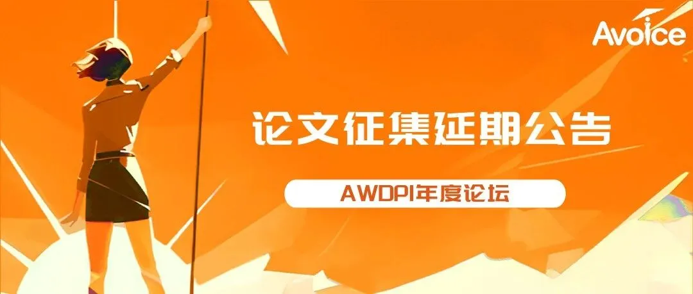
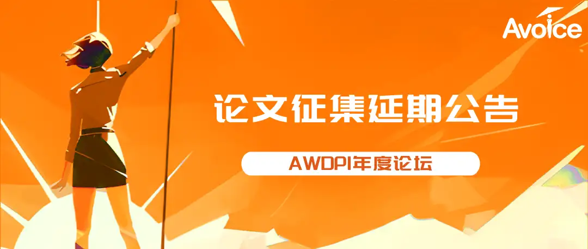

原定于2024年8月举办的“2024 AWDPI亚裔女性国际发展论坛”得到众多响应与支持，在备受鼓舞之际，我们深觉更应让本届论坛的质量与影响力有更多提升。
为了进一步丰富论坛内容，邀请更多杰出嘉宾，并优化技术平台，以提供更加流畅、互动性更强的参会体验，经论坛组委会广泛征询意见和慎重考虑，最终决定将本届大会开幕时间延期至2024年11月23日至24日，因此，论文征稿日期也同步延期。以下为本届论坛论文征集的最新征文公告：
2024 AWDPI亚裔女性国际发展论坛即将启幕。本届论坛将围绕“Orange the World——共建无暴力的未来”“女性身份塑造新纪元”两大主题，与世界各地关注亚裔女性发展的政府部门、学术机构、公益组织、专家学者、意见领袖和热心人士展开深度对话，呈现一场凝聚智慧、探索和热情的思想盛宴。
【论文评议】作为AWDPI亚裔女性国际发展论坛一直并保留的重要内容板块，将在过去三年的基础上进行拓展与创新，再次公开征集论文与研究投稿，并在论坛上进行公开展示。
关于2024AWDPI亚裔女性国际发展论坛的更多详细信息，请您对我们的公众号保持关注，我们将会陆续向您介绍精彩的论坛议程与令人期待的重量级嘉宾！
1. 举办论文评议的目的
• 展现AWDPI学术水平与能力；
• 为AWDPI成员及从事性别议题研究的学者搭建参与学术交流的桥梁；
• 促进跨学科交流，与更多不同领域的专家学者共筑学术网络。
2. 论文评议流程
• 专题论文评议与展示：AWDPI亚裔女性国际发展论坛将专设2-2.5小时进行相关主题论文的评议与展示
• 精选论文讲解与点评：我们将在投稿中选出质量优秀的4-6篇论文，每篇进行8分钟的讲解展示，并邀请专家学者进行10分钟左右的点评和建议
• 在线海报展示与交流 ：若投稿量充足，我们还将增设在线海报展示环节。将高质量投稿制作成在线海报（poster），供与会者在不同的虚拟会议空间内自由“穿梭”观赏。展示者将有机会亲自讲解自己的学术海报，与来自世界各地的学者进行深入沟通与讨论，共同探索学术新知
3. 论文征稿对象
本次论文征稿开放给：
• AWDPI现任成员
• AWDPI人才库及往届成员
• 由AWDPI成员内推的伙伴
• 对本次论坛主题有强烈兴趣并从事相关研究的社会各界人士和在校学生
4. 论文征稿主题
任何与AWDPI涉足或计划涉足的领域相关的主题，包括但不限于：
学科背景不限，我们尤其鼓励跨学科研究的投稿和参与，如：
• 科技+公益（女性网站论坛对公共领域构建支持与现状等）
• 政策+女性健康（医疗和社会保障视角下的女性健康等）
• 职场+教育（海外华人女性职场胜任力培养等）
• 法律+心理（暴露于家庭暴力环境中的儿童心理创伤与成年后犯罪概率等）
论文主题与内容需与AWDPI愿景“为女性创造爱与平等的世界”和价值观“参与、包容、赋能”相符。
5. 论文评议老师
将邀请性别平等、国际传播、女性赋能、公益慈善等领域的专家学者进行论文评议
6. 论文与研究评选条件
• 中英文不限；如需使用其他语言，请单独联系学术处咨询：[email protected]
• 立意明确，主题鲜明，论据充分，条理清晰，语言精炼
• 符合文体规范，内容包括标题、作者姓名、内容摘要、关键词、正文、参考文献等部分
• 建议中文不超过15000字，英文不超过8000词
• 论文要体现原创性，不得抄袭，不得侵犯他人的合法权益
• 不接受已公开发表的论文投稿
• 本次会议鼓励对会议主题有强烈兴趣或想法、尤其是暂未参与过正式学术论坛的作者积极参与，欢迎实验研究、文献综述、系统综述、元分析等各类投稿，促进学术交流与繁荣；我们也欢迎暂时没有完整研究成果的同学提交和分享高质量的研究计划、正在进行中的研究、学期作业或小论文。
7. 投稿途径与截止日期
• 请通过以下链接进行投稿：
https://awdp-intl.feishu.cn/share/base/form/shrcnyw5HmK37YNxWHB6T3Gl8Xd
• 或扫描下方二维码进行投稿：
• 优先截止日期：北京时间2024年10月20日23:59（在此之前投稿均会被审阅）
• 最终截止日期：北京时间2024年10月27日23:59（在优先截止日期后，在此之前投稿，会根据评议老师的时间安排审阅，不能保证一定会被审阅）
• 投稿通道将于北京时间2024年10月27日23:59关闭；投稿结果会通过您在投稿表单中填写的电子邮箱告知。
三、论坛与论文评议观众参与途径
本次论坛的所有环节都会以线上会议的形式开放给公众参与，论文评议场次暂定于北京时间2024年11月24日20:00-22:00(暂定)进行。请关注本微信公众号的后续推文，获取参与渠道和参与方式，期待您的加入！
撰稿｜田博
排版/封面｜付雨轩